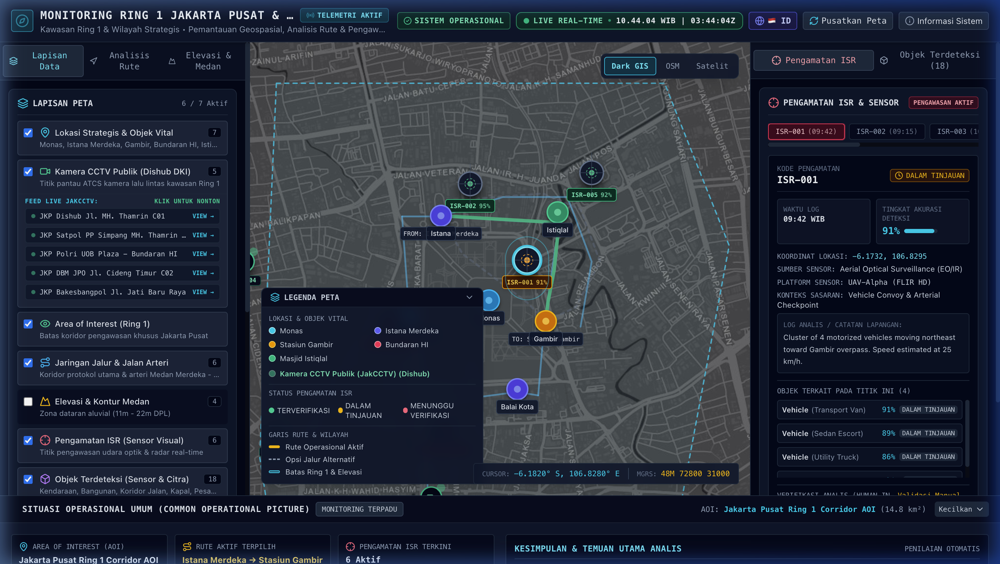
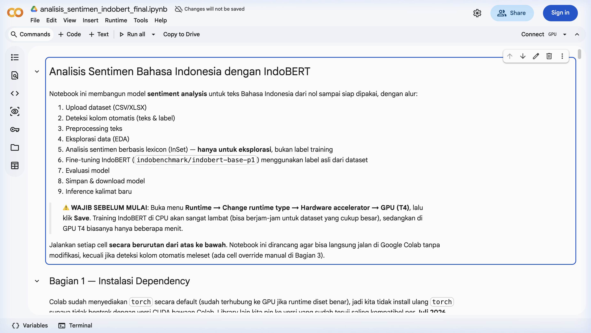
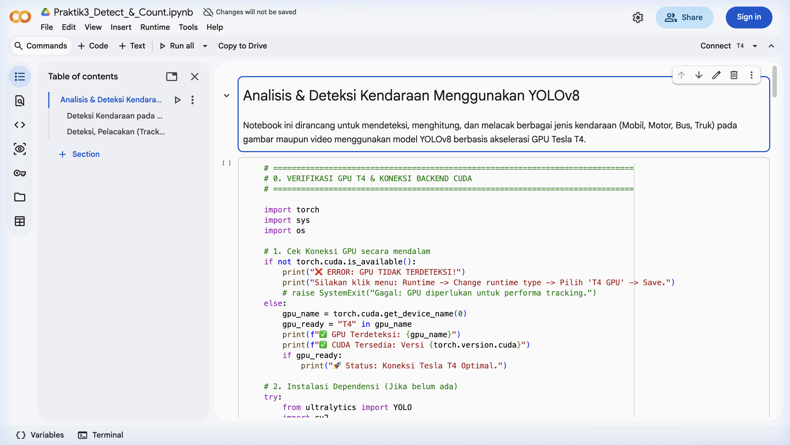
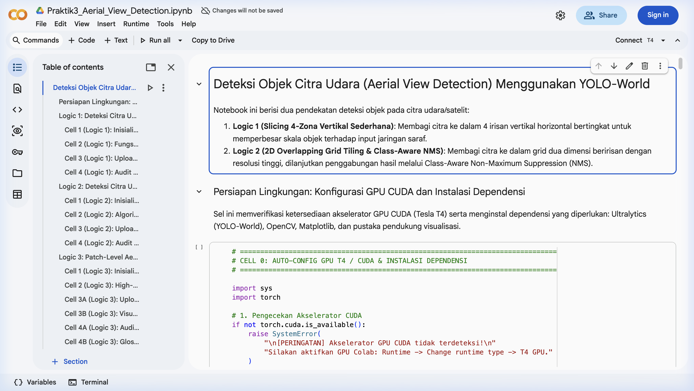
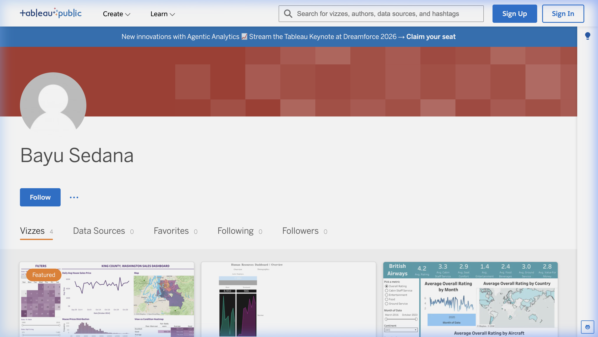
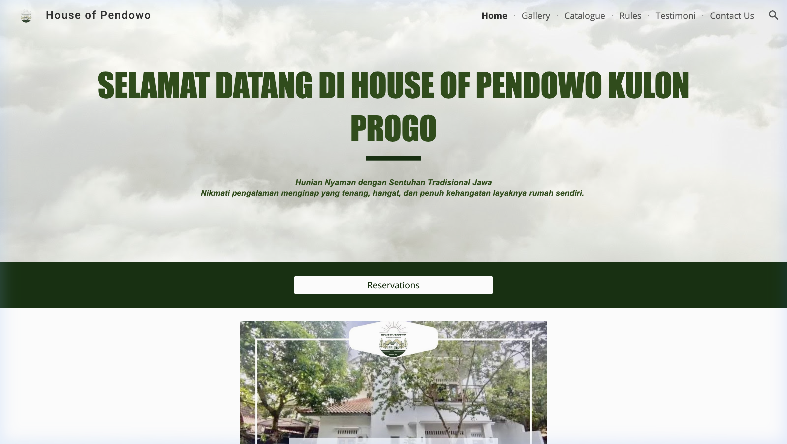
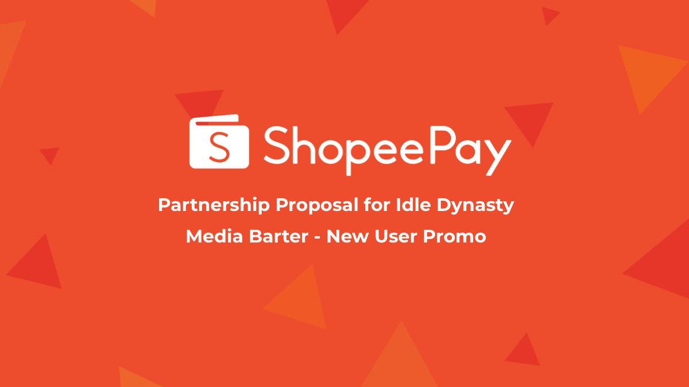
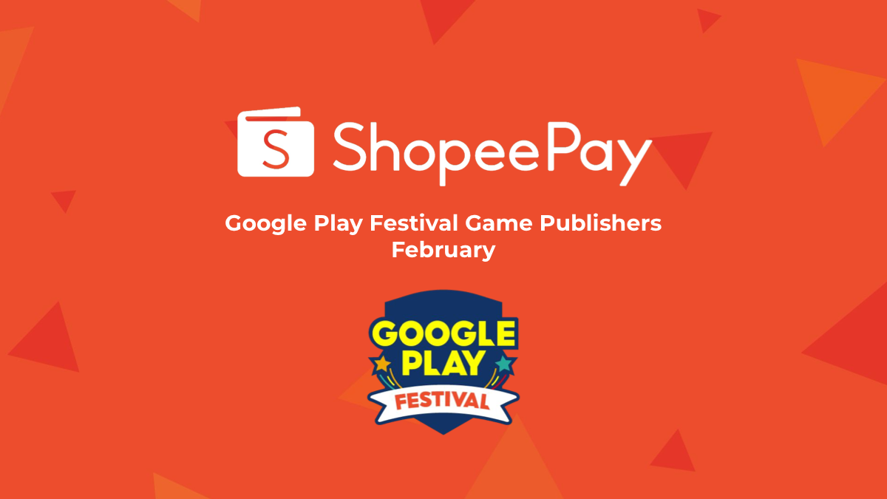
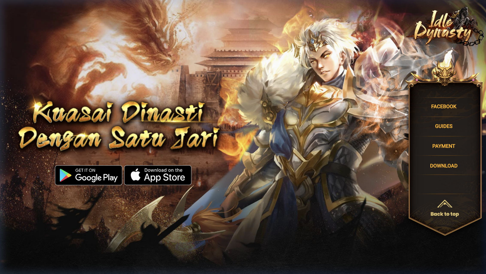
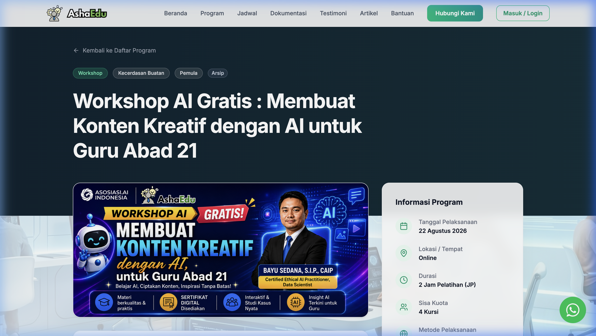

Vercel • Web App Pratinjau ↗Dashboard Monitoring Wilayah Jakarta
Aplikasi web dashboard interaktif untuk agregasi data dan monitoring indikator operasional wilayah Jakarta yang dideploy di Vercel.
Koleksi proyek pilihan di bidang rekayasa software, machine learning Python, integrasi fintech, visualisasi Tableau, dan sistem web app.

Vercel • Web App Pratinjau ↗Aplikasi web dashboard interaktif untuk agregasi data dan monitoring indikator operasional wilayah Jakarta yang dideploy di Vercel.

Google Colab • NLP Pratinjau ↗Pemodelan klasifikasi sentimen teks menggunakan Python, preprocessing data teks, dan evaluasi algoritma machine learning di Google Colab.

Google Colab • CV Pratinjau ↗Implementasi computer vision berbasis deep learning untuk mendeteksi objek sekaligus menghitung jumlah target visual secara otomatis.

Google Colab • CV Pratinjau ↗Deteksi dan pelacakan objek dari sudut pandang citra udara / drone (aerial imagery) menggunakan model deep learning di Google Colab.

Tableau • BI Pratinjau ↗Kumpulan portofolio dashboard interaktif, visualisasi indikator metrik bisnis, dan eksplorasi data yang dipublikasikan di Tableau Public.

Web Portal Pratinjau ↗Portal profil bisnis digital dan informasi katalog layanan untuk House of Pendowo.

ShopeePay • Fintech Pratinjau ↗Proposal integrasi dan kemitraan promosi fintech ShopeePay untuk pengguna baru game Idle Dynasty. Hanya menampilkan Halaman 1 (Cover) sesuai batasan kerahasiaan.

ShopeePay • Fintech Pratinjau ↗Perencanaan kemitraan promosi pembayaran ShopeePay dalam ajang Google Play Festival. Hanya menampilkan Halaman 1 (Cover) sesuai batasan kerahasiaan.

Indofun • Game Guides Pratinjau ↗Portal dokumentasi dan panduan interaktif resmi untuk membantu pemain memahami mekanisme event, alur transaksi, dan panduan dasar game.

Asha Edukasi • AI Workshop Pratinjau ↗Pelatihan pemanfaatan generative AI untuk para pendidik bersama Asha Edukasi dan Asosiasi AI Indonesia, membedah pembuatan modul ajar, asesmen otomatis, dan media pembelajaran interaktif.